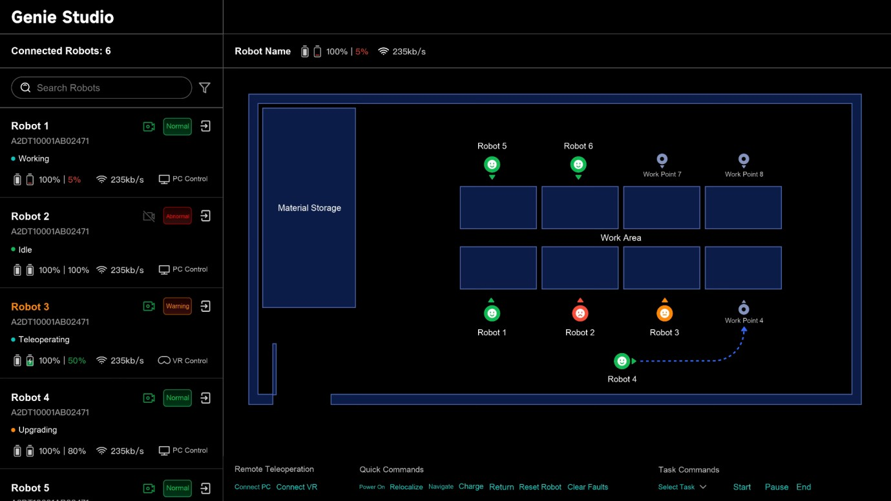

机器人会抓取之后，还有整条工序
机器人在桌上抓起一件零件，距离生产线能够使用还有不少步骤。机床是否准备好、物料是否到位、另一台设备是否占用通道，都可能改变下一步动作。Genie Studio 2.0把模型迭代、工序编排和运行管理放在同一套产品中。这里需要关注的是工程人员如何把一个能演示的技能安排进完整工作，而不是把某次抓取成功视为整线自动化。原本分散在模型训练工具、设备控制程序与现场日志里的信息，如果能通过共同任务标识对齐，排错就少一次由人手工复述上下文的交接。
Genie Studio 2.0 · 产品更新 · 机器人作业平台

机器人在桌上抓起一件零件，距离生产线能够使用还有不少步骤。机床是否准备好、物料是否到位、另一台设备是否占用通道，都可能改变下一步动作。Genie Studio 2.0把模型迭代、工序编排和运行管理放在同一套产品中。这里需要关注的是工程人员如何把一个能演示的技能安排进完整工作，而不是把某次抓取成功视为整线自动化。原本分散在模型训练工具、设备控制程序与现场日志里的信息，如果能通过共同任务标识对齐，排错就少一次由人手工复述上下文的交接。
平台的Flywheel处理数据与训练，Agent提供可视化工序组合，Monitor负责多台设备的运行视图。官网还列出数据质检、仿真评估和真机部署等环节。对采购团队而言，画布上一个导航节点是否能放进去，只是接入的开始；更重要的是节点等待、超时或失败时，下游设备会收到什么状态。现场有PLC、生产系统和夹具时，应先找出哪部分仍要项目代码补齐。模板能够减少重复配置，却不能让不同工位的坐标、物料公差与设备互锁自动相同。
一个运维界面如果只给机器人标红，值班人员仍要逐台登录，才知道卡在取料还是装配。厂商说明Monitor可以定位设备与工序步骤并远程介入。这给恢复设计留下了具体检查对象：介入后任务是否继续、是否需要重新确认物料位置、哪些动作应回到人工，都应该在真实工位中讲清楚。建议保留故障前后的状态和修改记录，使下一班能理解为什么换了参数；这是部署时要建立的记录要求，不能直接当成公告已经承诺的完整回滚功能。
中文同期报道明确10月23日发布，官方英文稿标10月26日；本期按一周回看收录。中文报道披露了制造与地铁项目案例，但案例的工位、零件和验收条件各不相同，不宜合并成一个通用成功率。团队可以先用原有控制软件与人工调度作为基线，比较换一种物料后还要修改多少逻辑、故障交接能否少查几处记录。平台价格、完整部署条件以及不同现场的维护责任未获公开确认。若节省只发生在首次演示，后续每次换型都仍需重做集成，就不能据此估算规模部署的收益。